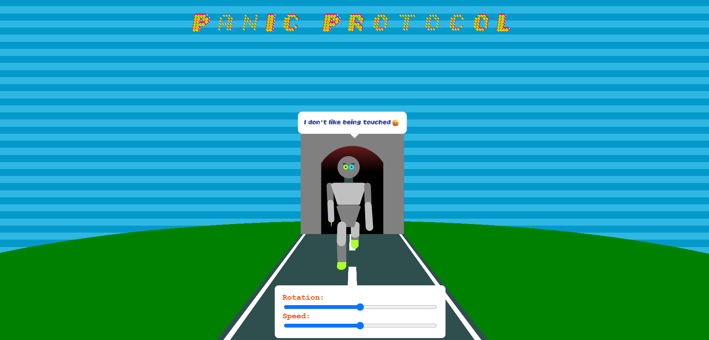

Voor het vak CSS kreeg ik de opdracht om een ‘silly walk’ te maken. Hierbij mocht ik zelf kiezen wat het thema hierbij was en hoe het er uit kwam te zien. Mijn idee was om een robotje te maken die kon lopen, waarvan je hem in 3d kon zien.
Uiteindelijk ben ik blij met wat ik heb gemaakt. En ik heb erg veel geleerd tijdens het proces. Ik heb een aantal nieuwe dingen geleerd bij het maken van deze opdracht:
- Ik heb geleerd hoe gradients werken en hoe ik die kan maken en animeren.
- Ik heb geleerd hoe ik een poppetje kan maken in CSS waarbij de elementen relatief zijn aan elkaar.
- Ik heb geleerd hoe elementen kan animeren, hierbij heb ik gebruik gemaakt van transforms, keyframes en transform-origin.
- Ik heb geleerd hoe 3d omgevingen maak met CSS en hoe ik deze kan animeren.
- Ik heb geleerd hoe containers werken in CSS.
- Ik heb geleerd hoe ik een variabele font kan toepassen in mijn websites.
Ik vond het maken van een poppetje waarbij de ledematen relatief zijn aan elkaar erg lastig. Ik ben hier dan ook een lange tijd mee bezig geweest, omdat de elementen van het poppetje in de eerste instantie niet in elkaar zaten, waardoor animaties nog lastiger zouden worden.
Verder had ik nogsteeds moeite met het maken van een 3d omgeving, maar ik denk dat ik hier wel veel meer van begrijp dan hiervoor. Dus ik ben blij dat ik mijzelf hier in heb uitgedaagd. Ook merkte ik dat ik moeite heb bij het aanhouden van een bepaald thema, hierdoor valt de style van mijn website niet helemaal samen. In het vervolg lijkt het me handig om hier dan ook een moodboard voor te maken.
In de foto hier onder zie je bijvoorbeeld dat de achtergrond heel natuurlijk is, terwijl de robot daar niet echt bij past.

Het animeren van een variabele font viel me nog mee. Dit ging wel zoals ik had verwacht, dus daar was ik blij mee. Ook het toepassen van containers in CSS ging goed. Ik heb geprobeerd om delays toe te voegen door middel van de sibling-count() methode in CSS. Ik merkte dat dit ook zijn limieten had. Ik had namelijk mijn span elementen in divs gezet, zodat er een andere animatie op gedaan kon worden. Alleen hierdoor werkte sibling-count() niet meer op de span elementen. Ik heb geprobeerd om de sibling-count() op te slaan in een CSS variable, maar ook dit hielp niet. Daarom heb ik deze delays hard-coded in mijn CSS moeten zetten.
Ik wist wel dat je veel kunt met CSS, dit heb ik ook gezien door naar de projecten van anderen te kijken. Toch ben ik positief verbaasd dat ik dit ook kan toepassen. Ik vind het vooral heel cool dat je ontzettend veel kunt doen met gradients. Veel meer dan ik dacht. In de toekomst wil ik meer ontdekken over wat ik kan doen met gradients en masks. Voor mijn poppetje zouden masks een goede optie zijn om hem beter vorm te geven bijvoorbeeld. Dit heb ik helaas niet kunnen experimenteren vanwege tijdsnood. Dus hier wil ik zeker ook onderzoek naar doen. Verder vind ik het maken van 3D elementen ontzettend vet, dus hier wil ik ook meer van maken.